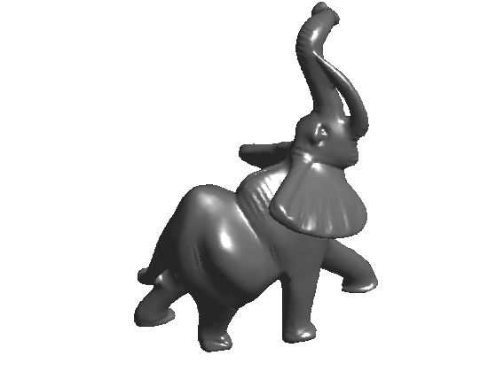
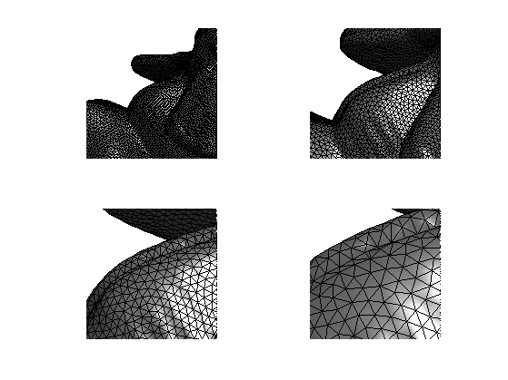
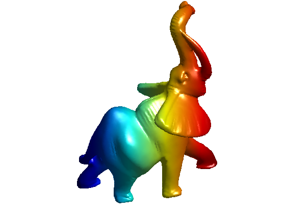
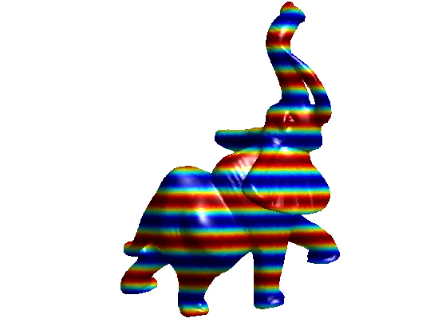
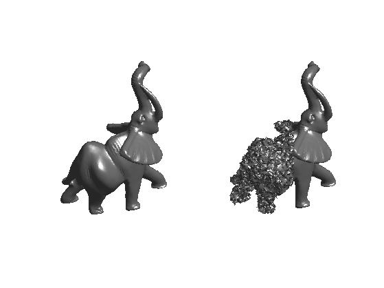
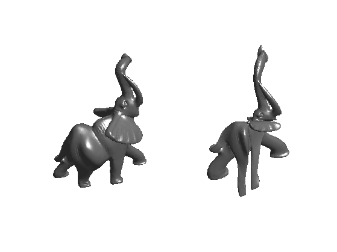
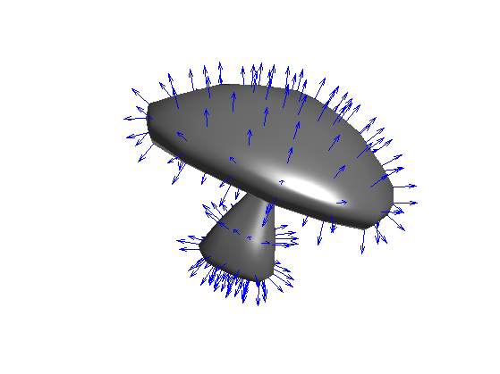
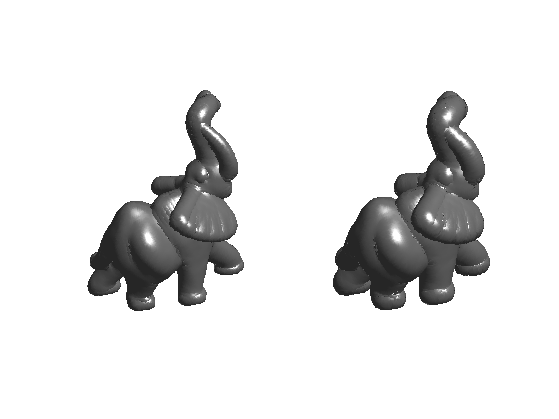
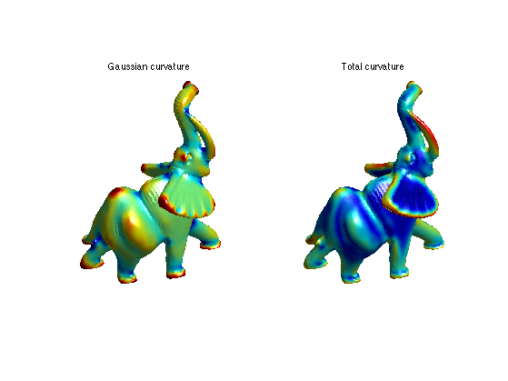

Basics About 3D Meshes
This tour explores some basics about 3D triangulated mesh (loading, display, manipulations).
Contents
Installing toolboxes and setting up the path.
You need to download the following files: signal toolbox, general toolbox and graph toolbox.
You need to unzip these toolboxes in your working directory, so that you have toolbox_signal, toolbox_general and toolbox_graph in your directory.
For Scilab user: you must replace the Matlab comment '%' by its Scilab counterpart '//'.
Recommandation: You should create a text file named for instance numericaltour.sce (in Scilab) or numericaltour.m (in Matlab) to write all the Scilab/Matlab command you want to execute. Then, simply run exec('numericaltour.sce'); (in Scilab) or numericaltour; (in Matlab) to run the commands.
Execute this line only if you are using Matlab.
getd = @(p)path(p,path); % scilab users must *not* execute this
Then you can add the toolboxes to the path.
getd('toolbox_signal/'); getd('toolbox_general/'); getd('toolbox_graph/');
3D Mesh Loading and Displaying
A 3D mesh is composed of a vertex array of size (3,n) that contains the position in 3D (or sometimes 2D) of the vertices, and a face array of dimension (3,m) that contains the indexes of each triangulated face.
One can load the mesh from a file.
name = 'elephant-50kv'; options.name = name; % useful for displaying [vertex,face] = read_mesh(name);
The face matrix store the topology (connectivity) of the mesh, while vertex stores the geometry (position of the points). In the following, we consider modification of the geometry only.
One can display the mesh as a piecewise linear surface.
clf;
plot_mesh(vertex, face);
shading('interp');
 You can zoom on the mesh and display its triangulated faces.
clf; for i=1:4 subplot(2,2,i); plot_mesh(vertex, face); shading('faceted'); zoom(1.8^(i+1)); end
Functions on Meshes
A function assign a value to each vertex of the mesh. The vertex position stored in the matrix vertex are actually 3 functions X/Y/Z.
Display the function X.
options.face_vertex_color = vertex(1,:)'; clf; plot_mesh(vertex, face, options); colormap(jet(256));
Display the function cos(10*Y).
options.face_vertex_color = cos(50*vertex(2,:)'); clf; plot_mesh(vertex, face, options); colormap(jet(256));
Remove coloring.
options.face_vertex_color = [];
Mesh Modification
The vertex data can be modified, while keeping the connectivity face fixed.
Random perturbation can be added to the positions (here only on the right side of the mesh).
noise = randn(size(vertex))*.01; noise(:,vertex(1,:)>mean(vertex(1,:))) = 0; vertex1 = vertex+noise;
Display.
clf; subplot(1,2,1); plot_mesh(vertex,face, options); axis('tight'); subplot(1,2,2); plot_mesh(vertex1,face, options); axis('tight');
The mesh can be warped.
vertex1 = sign(vertex) .* (abs(vertex)/max(abs(vertex(:)))).^1.8;
Display.
clf; subplot(1,2,1); plot_mesh(vertex,face, options); axis('tight'); subplot(1,2,2); plot_mesh(vertex1,face, options); axis('tight');
Normal Computation
The norma of the mesh are easily computed on each face (by computing the normal to the triangle), and can then be interpolated to the edge and vertices by averaging the surrounding faces.
Load a small mesh for the display of the normals.
name = 'mushroom';
options.name = name;
[vertex,face] = read_mesh(name);
You can compute the normal to the mesh per vertex and per face
[normal,normalf] = compute_normal(vertex,face);
Display the mesh and the normals.
clf; options.normal = normal; plot_mesh(vertex,face,options); shading('interp'); axis('tight'); options.normal = [];
Re-load a larger mesh.
name = 'elephant-50kv';
options.name = name;
[vertex,face] = read_mesh(name);
You can extrude the mesh along the normal direction.
[normal,normalf] = compute_normal(vertex,face); vertex1 = vertex + .02*normal; vertex2 = vertex + .04*normal;
Display.
% no color for display options.face_vertex_color = []; clf; subplot(1,2,1); plot_mesh(vertex1,face,options); shading('interp'); axis('tight'); subplot(1,2,2); plot_mesh(vertex2,face,options); shading('interp'); axis('tight');
Differential Calculus on 3D Mesh
You can compute matrix (sparse) of differential and averaging operators on 3D meshes.
There are several ways to define these operators, first depending on the precise definition of the weight used for the computation. Here we use 'distance' weighs, but you can try with 'conformal' (that are more precise since they depend on angle, but they are also slower to compute) and 'combinatorial' (that are less accurated since they depend only on the topology of face, but are fast to compute).
A weight matrix is a weighted adjacency matrix that acts as a low pass filter.
laplacian_type = 'distance';
A laplacian is an high pass operator that compute second order derivatives. Here we use a 'distance'-based Laplacian, that is fast to compute and quite accurate.
% compute a normalized symmetric Laplacian options.symmetrize = 0; options.normalize = 1; L = compute_mesh_laplacian(vertex,face,laplacian_type,options); % compute a non normalized Laplacian options.symmetrize = 0; options.normalize = 1; L0 = compute_mesh_laplacian(vertex,face,laplacian_type,options);
We can compute the Laplacian of a function on the mesh, for instance the X and Y position.
v1 = L*vertex(1,:)'; v2 = L*vertex(2,:)';
Clip the values to enhance the color display.
vmax = median(abs(v1)*5); v1 = clamp(v1,-vmax,vmax); vmax = median(abs(v2)*5); v2 = clamp(v2,-vmax,vmax);
Display.
clf; subplot(1,2,1); options.face_vertex_color = v1; plot_mesh(vertex,face, options); title('Laplacian of X'); subplot(1,2,2); options.face_vertex_color = v2; plot_mesh(vertex,face, options); title('Laplacian of Y'); options.face_vertex_color = []; colormap(jet(256));

Curvatures
Second order derivatives gives access to curvatures direction and informations.
Load a mesh
name = 'elephant-50kv'; options.name = name; % useful for displaying [vertex,face] = read_mesh(name);
Since higher order derivative are quite sensitive to noise, one needs to computes them using local averaging. You can compute curvature quantities using local avergaging and PCA analysis.
Compute the curvature.
options.curvature_smoothing = 10; options.verb = 0; [Umin,Umax,Cmin,Cmax,Cmean,Cgauss,Normal] = compute_curvature(vertex,face,options);
Display.
clf; subplot(1,2,1); options.face_vertex_color = perform_saturation(Cgauss,1.2); plot_mesh(vertex,face, options); shading interp; colormap jet(256); title('Gaussian curvature'); subplot(1,2,2); options.face_vertex_color = perform_saturation(abs(Cmin)+abs(Cmax),1.2); plot_mesh(vertex,face, options); shading interp; colormap jet(256); title('Total curvature');
Tetrahedral Mesh Loading and Displaying
You can load and display volumetric tetrahedral meshes. Important: .tet files and not included in the toolbox distribution (too large files). You should download them from
Load a volumetric mesh.
[vertex,face] = read_tet('toolbox_additional/hand.tet');
Display it.
clf; plot_mesh(vertex,face,options);